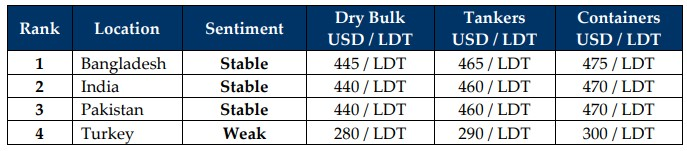

inWeekly Demolition Reports10/02/2025

With week 6 of 2025 behind us, the raging fires of tariffs and counter-tariffs that continue to suppress recycling vesselprices via volatile fundamentals, are now creating a path for the (near) future of the ship recycling industry, one that seems to be headed for a Q1 and likely even Q2 of an industry that will likely be chasing falling prices. To start, some of the seriously older tonnage that has gotten an extension on their expiration dates via global events and wars that saw charter rates soar through the skies across 2023 and especially 2024, only subjected the ship recycling industry to one of the lowest volumes of tonnage offerings seen in about a decade. But with time trudging on and chances for further trades on these already rusty units getting slimmer at the seams with every passing week, the industry has as a result, seen a flurry of tonnage enter the markets since the onset of 2025, which was then followed by a surge in arrivals at respective waterfronts over the last couple of weeks including this one, with Pakistan finally breaking its mold of absence via a fresh arrival of its own.
As the Baltic Exchange’s Dry Index reported dry bulk rates stabilizing across January 2025 and even start to climb across the last couple of weeks, the inflow of recycling tonnage at the bidding tables has continued unabated even in the face of declining offers. Even oil prices remain volatile as they close the week out at USD 71/barrel amidst further fears of rising fuel and energy prices and President Trump furthering President Bidens recent sanctions on both Russian and Chinese energy / dark fleets, via a fresh set of sanctions on Iranian tankers and those trading oil with Iran. As global economies react to the unfolding present, the U.S. Dollar continues to dominate the currency race as it registers noteworthy improvements across the ship recycling board, sadly hitting India the hardest this week, given that India is the most viable option for units sailing East out of the Red Sea.
This weakening in ship recycling nation currencies as well flatlining / declining steel plate prices have seen vessel offers continually cooling across the sub-continent markets, which remains no surprise given that the true nature of unfolding reality is yet to fully settle in and be felt, as levels of up to USD 30/LDT across the board were wiped out at a time that is a traditionally stronger period for global ship recycling markets ‘pre’ and now, ‘post’ Chinese New Year, as Chinese / Far Eastern owners are generally the most active in selling their overaged candidates including this year, where dry bulk / Panamax units have also been the flavor of late. While tanker rates continue to soar and owners globally re-positioning their units on the back of rising rates / sanctions, 2025 might be the year of the missing tankers despite a few wet sanctioned units making the recycling rounds. Even as a raft of LNG sales from the Korean market saw several respective units from this sector hit the beach, supply is expected to remain strong for the upcoming quarter(s) and perhaps, even the remainder of the year, all at a time tariffs on Chinese products – including steel – are due to take effect and where this excess and increasingly cheaper steel ends up, could spell disaster for the ship -recycling markets and vessel prices. As riots and violence re-erupts across much of Bangladesh, India’s budget ending up a miss, Pakistan still seeks funding, and Turkey dissolves in the West, post-Chinese New Year state of affairs is keeping the wheels of ship recycling turning, albeit at expectedly lower levels and a persistent demand from all markets.
For Week 6 of 2025, GMS Market Rankings / vessel indications are as below.

📄 Download PDF: Ship-recycling-market-insight-Week-06-02-07-2025-Tarrifs_and_Prices.pdfSource: GMS,Inc.https://www.gmsinc.net/gms_new/index.php/web